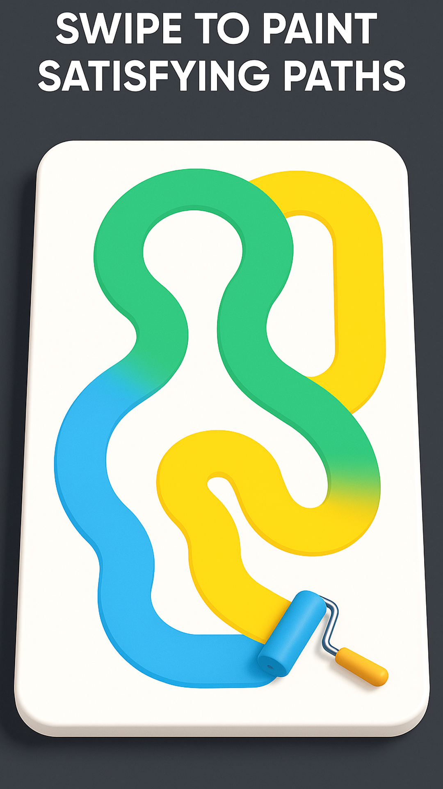
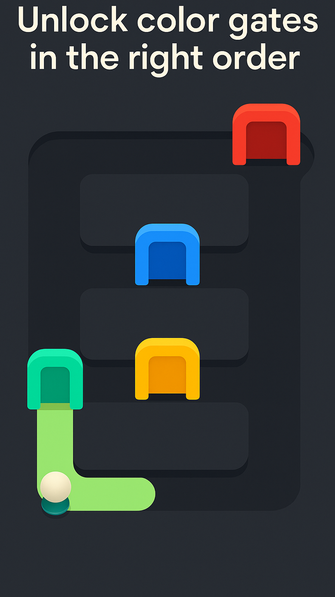
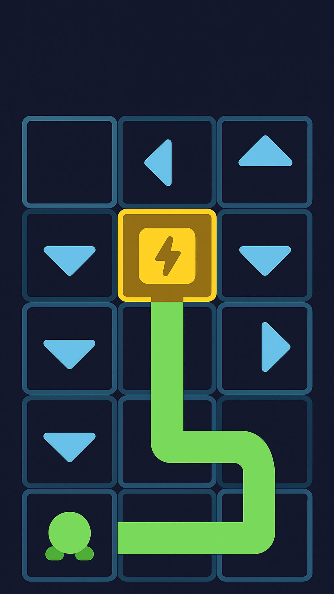
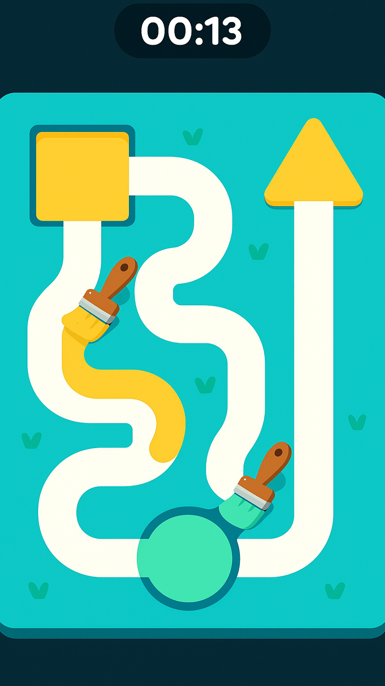

Path Painter
Swipe to paint mazes, unlock color gates, and solve quick brain-teasers.




Swipe to paint satisfying paths through clean, bite-sized mazes. Plan your route, unlock color-coded gates in the right order, tap switches, and outsmart one-way tiles to fill the board. Quick 1–3 minute puzzles with cozy vibes, tactile haptics, and optional timers.
Why you’ll enjoy Path Painter:
- Smart gate logic: paint colors in sequence to open doors and reach new areas.
- Easy to pick up: simple swipe controls, instant fun in portrait.
- Satisfying feedback: smooth paint trails, gentle sounds, and haptics.
- Accessibility built-in: high-contrast mode, colorblind-friendly palettes and patterns.
- Play your way: zen flow with no timer, or add a gentle timer for extra challenge.
- Daily Puzzle: one fresh challenge every day.
- Collect cosmetics: unlock brush and trail styles with coins earned from play.
Play sessions fit your day—finish a level on a break, then come back for more. Earn stars and coins, use hints or undos when you’re stuck, and progress through handcrafted chapters from basics to expert layouts.
Features:
- 100+ handcrafted levels across themed chapters
- Undo and Reset for stress-free solving
- Rewarded boosts: +1 Hint, +1 Undo, or +30s Time when you need it
- Offline-friendly and one-handed
Monetization:
- Free to play with optional ads
- IAP: Remove Ads, coin packs, and purely cosmetic bundles (no gameplay advantage)
Paint the perfect path. Open every gate. Enjoy the flow.
Support: jeets98e@gmail.com